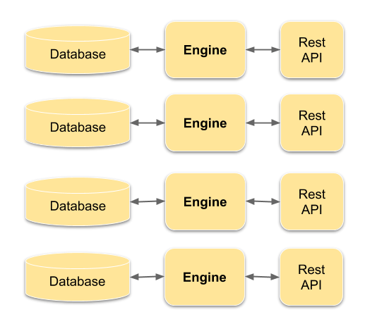
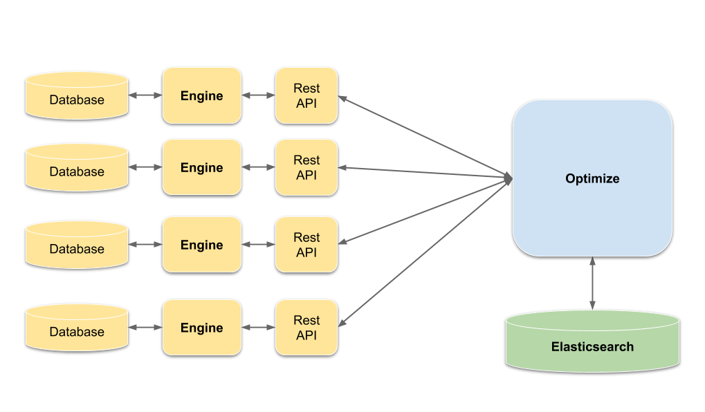
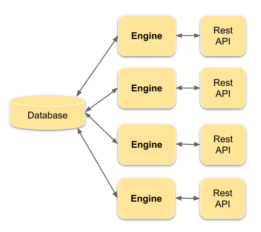
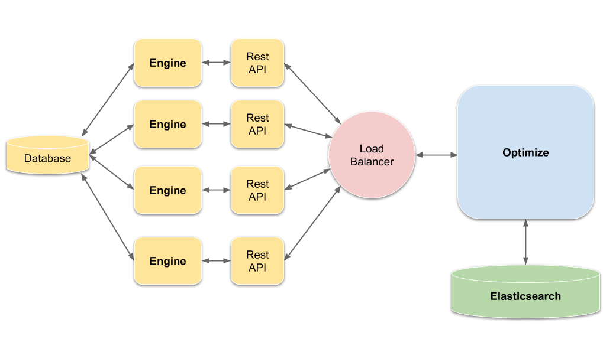

Multiple process engines
Learn how to set up multiple process engines with Optimize and which scenarios are supported.
Possible multiple process engine scenarios
There are two possible setups where multiple process engines can be used:
- Possible multiple process engine scenarios
- Authentication and authorization in the multiple engine setup
Check which scenario corresponds to your setup because the configuration of multiple engines to Optimize is not always suited for the best import performance.
There are two restrictions for the multiple engines feature:
- The process engines are assumed to have distinct process definitions, which means that one process definition (same key, tenant and version) is not deployed on two or more engines at the same time. Alternatively, each engine could be configured with default tenant identifiers as described in the One Tenant Per Engine Scenario.
- The engines are assumed to have distinct tenant identifiers, which means one particular tenantId is not deployed on two or more engines at the same time.
Multiple engines with distributed databases
In this scenario, you have multiple process engines and each engine has its own database as illustrated in the following diagram:

Now, you are able to connect each engine to Optimize. The data will then automatically be imported into Optimize. The following diagram depicts the setup:

To set up the connections to the engines, you need to add the information to the configuration file. For the sake of simplicity, let's assume we have two microservices, Payment and Inventory, each having their own engine with its own database and processes. Both are accessible in the local network. The Payment engine has the port 8080 and the Inventory engine the port 1234. Now an excerpt of the configuration could look as follows:
engines:
payment:
name: default
rest: http://localhost:8080/engine-rest
authentication:
enabled: false
password: ""
user: ""
enabled: true
inventory:
name: default
rest: http://localhost:1234/engine-rest
authentication:
enabled: false
password: ""
user: ""
enabled: true
payment and inventory are custom names that were chosen to distinguish where the data was originally imported from later on.
Multiple engines with a shared database
In this scenario you have multiple engines distributed in a cluster, where each engine instance is connected to a shared database. See the following diagram for an illustration:

Now it could be possible to connect each engine to Optimize. Since every engine accesses the same data through the shared database, Optimize would import the engine data multiple times. There is also no guarantee that importing the same data multiple times will not cause any data corruption. For this reason we do not recommend using the setup from multiple engines with distributed databases.
In the scenario of multiple engines with a shared database, it might make sense to balance the work load on each engine during the import. You can place a load balancer between the engines and Optimize, which ensures that the data is imported only once and the load is distributed among all engines. Thus, Optimize would only communicate to the load balancer. The following diagram depicts the described setup:

In general, tests have shown that Optimize puts a very low strain on the engine and its impact on the engine's operations are in almost all cases neglectable.
Authentication and authorization in the multiple engine setup
When you configure multiple engines in Optimize, each process engine can host different users with a different set of authorizations. If a user is logging in, Optimize will try to authenticate and authorize the user on each configured engine. In case you are not familiar with how the authorization/authentication works for a single engine scenario, visit the User Access Management and Authorization Management documentation first.
To determine if a user is allowed to log in and which resources they are allowed to access within the multiple engine scenario, Optimize uses the following algorithm:
Given the user X logs into Optimize, go through the list of configured engines and try to authenticate the user X, for each successful authentication fetch the permissions of X for applications and process definitions from that engine and allow X to access Optimize if authorized by at least one engine.
To give you a better understanding of how that works, let's take the following multiple engine scenario:
- Engine `payment`:
- User without Optimize Application Authorization: Scooter, Walter
- User with Optimize Application Authorization: Gonzo
- Authorized Definitions for Gonzo, Scooter, Walter: Payment Processing
- Engine `inventory`:
- User with Optimize Application Authorization: Piggy, Scooter
- Authorized Definitions for Piggy, Scooter: Inventory Checkout
- Engine `order`:
- User with Optimize Application Authorization: Gonzo
- Authorized Definitions for Gonzo: Order Handling
Here are some examples that might help you to understand the authentication/authorization procedure:
- If
Piggylogged in to Optimize, she would be granted access to Optimize and can create reports for the definitionInventory Checkout. - If
Rizzologged in to Optimize, he would be rejected because the userRizzois not known to any engine. - If
Walterlogged in to Optimize, he would be rejected despite being authorized to access the definitionPayment Processingon enginepaymentbecauseWalterdoes not have theOptimize Application Authorizationrequired to access Optimize. - If
Scooterlogged in to Optimize, he would be granted access to Optimize and can create reports for the definitionInventory Checkout. He wouldn't get permissions for thePayment Processiningor theOrder Handlingdefinition, since he doesn't have Optimize permissions on thepaymentororderengine. - If
Gonzologged in to Optimize, he would be granted access to Optimize and can create reports for the definitionPayment Processiningas well as theOrder Handlingdefinition, since definitions authorizations are loaded from all engines the user could be authenticated with (in particularpaymentandorder).